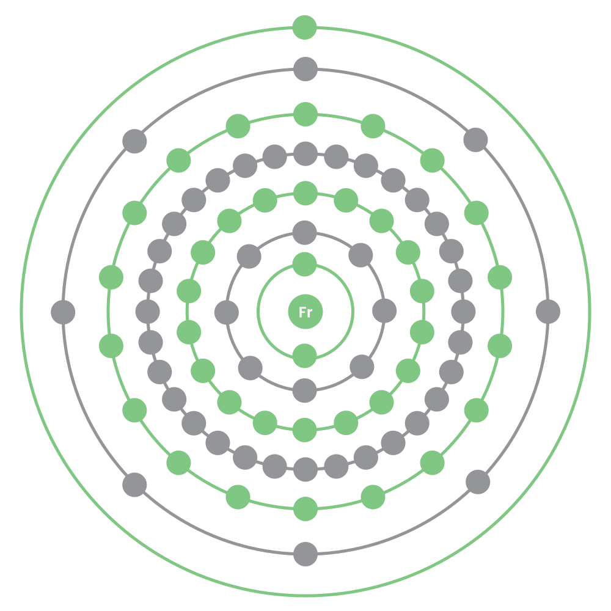

Discovery
Francium was discovered by Marguerite Perey in 1939 when she was researching radioactive decay of Actinium. The name comes from the country of discovery, France. Francium is the last known naturally occuring element to be discovered.
Characteristics
| Group | Period | Block | Number | Configuration |
|---|---|---|---|---|
| 1 | 7 | s | 87 | [Rn] 7s1 |
| Melting Point | Boiling Point | Density | Mass | Key Isotope |
| 21°C | 650°C | Unknown | 223 | 223Fr |
Francium is a highly radioactive metal but because there's so little of it on the planet at any time, there's no appearance or characteristic data for it. It's likely a metallic solid that reacts explosively with water.
It's yet to be subjected to a burn test so it's impossible to say how it would react during one.
| Atomic Radius | Electron Affinity | Covalent Radius | Electronegativity |
|---|---|---|---|
| 3.48 | 44.38 | 2.42 | 0.7 |
Uses
Francium has no known uses as it has a halflife of 22 minutes.
◀ Home